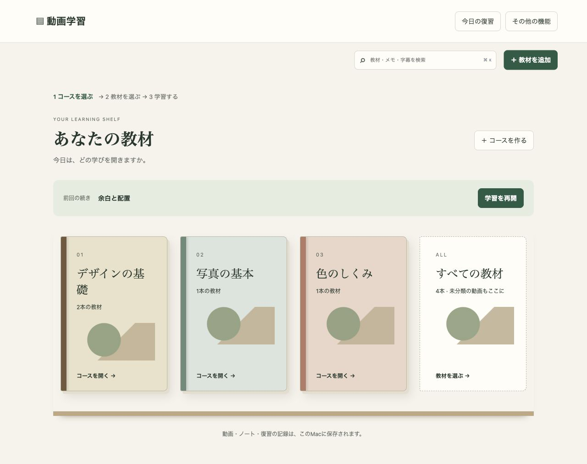

01
見る。
YouTubeや手元の動画を教材に。前回の再生位置から、そのまま続けられます。
前回の続きから再開 ↗
YouTubeも、手元の講義も。
本棚から選び、ノートと復習へ。一画面、一つのことに集中。
見る、残す、
覚える、戻る。

一画面、一つのことに集中する。配布アプリに同梱したUIのブラウザ撮影 / サンプル教材 / 静止画の切り替えです
講義を見終えた、その先へ。
その場の気づきを、
次の理解につなげる4つの動作。
YouTubeや手元の動画を教材に。前回の再生位置から、そのまま続けられます。
前回の続きから再開 ↗重要な画面をスクショし、気づきをメモ。「分からない」も時刻付きで残せます。
スクショに直接書き込み ↗メモや画像から復習カードを作成。思い出せたかに合わせて、次の復習日が変わります。
今日の復習がひと目で分かる ↗忘れた内容は元動画の説明へ。ノートも画像もカードも、同じ時刻につながっています。
もう一度、元の説明へ ↗いつものYouTubeページから動画を選択。公開プレイリストは、投稿者と講座にまとめて取り込めます。
元の講義順で進めて、次の動画へ。講座ごとの進捗も確認できます。
時刻付きノート、スクリーンショット、ペンや蛍光ペン。書き込んだ重要な範囲は、画像付きの復習カードにもできます。
この図の違いを、もう一度。
☆ 重要な気づき字幕、メモ、OCRで読んだ画像内の文字まで横断検索。画像AIの説明を使えば、曖昧な言葉でも探せます。
画像・OCR 図形の基礎 12:43 ↗
ノート 三角形と円の違い 18:05 ↗
文字起こし、章分け、要点整理、画像の読み取り。
学習を支える作業を、PC内のAIが手伝います。
カードの候補は、内容を確認・修正してから保存。
自分で理解する時間を、大切にするためのAIです。
モデルの初回取得にはネット接続が必要です。YouTubeの利用にもネット接続が必要です。
本棚の落ち着いた雰囲気と、
迷いにくい段階式の操作を組み合わせました。
コースを本の表紙で並べ、学びたい教材を開きます。
動画を選び、開始ボタンで学習に進みます。
動画を一時停止し、その時刻と一緒に気づきを保存。
カードの答えを確かめ、必要なら元動画へ戻れます。
0.14.1の配布アプリに同梱したUI / ブラウザで撮影した実装画面 / 掲載教材・件数はサンプルです
実装した機能と、
販売前に残る準備を分けてお伝えします。
最新の回帰テスト129件が成功。HTTP連携・保存・復元・復習・ライセンスの境界を検査しています。
MacBook Air M2・16GBで、動画再生・ノート・カード・YouTube選択・バックアップ等を実機確認。ローカルAI処理も実測しています。
新UIと復旧したコース別進捗は、最新版の配布サーバーで操作確認しました。
正式名称・価格・購入先、実注文から配送までの確認、Apple署名・公証、開発環境のない別のMacでの初回導入確認が残っています。
現時点は開発・販売準備段階です。学習効果やすべてのMacでの動作を保証する検証ではありません。
最新の回帰確認ではAI実モデルの3件を省略。AIの実測は過去の実機検証に基づきます。
新UIでもコース別進捗を独立画面で確認できるようにしました。
教材選択・視聴・ノート・資料・復習を整理。ノートへの切り替えで一時停止します。
0.25〜2倍速、A–Bリピート、自動バックアップ、目的別の設定を追加。
名前・順序・教材を編集し、直前の編集も取り消せます。YouTubeの接続案内も改善。
外部接続を初期状態で停止。原文の根拠付きカード候補、診断、配布検査を追加。
無料版＋買い切りProを予定しています。
開発用の全機能版と、購入後にProを登録する無料版を準備しています。
正式名称・販売価格・公開配布の開始時期は準備中です。販売用の署名・公証と決済連携は今後の対応となります。
使い始める前に、
知っておきたいこと。
AIの実行環境はアプリに同梱しています。アプリ内の「AIの準備」からモデルを選び、ボタンを押して初回のダウンロードを行います。OllamaやPythonの手動インストール、ターミナルでの操作は不要です。
動画や音声ファイルはダウンロードしません。YouTubeの実際のページで教材を選び、公式の埋め込みプレイヤーで再生します。公開プレイリストの情報や取得可能な公開字幕を取り込みます。非公開・年齢制限・埋め込み禁止の動画などは利用できない場合があります。
初期設定はローカル専用モードで、外部接続を使いません。手元の動画・ノート・画像・復習・取得済みAIモデル・ライセンス登録はPC内で完結します。YouTubeの視聴や公開字幕・プレイリストの取得、AIモデルの初回取得が必要なときだけ、設定で接続を許可してください。
AIはカードの候補を作ります。一括で作った候補には字幕の原文と時刻を残し、引用の対応を確認します。「AIカード候補」で内容を確認・修正して採用したものだけを復習に加えます。不要な候補は破棄できます。AIの読み取りや回答に誤りがある場合は、元動画の説明と照らし合わせて確認してください。
取り込んだプレイリストは名前・順序・構成を自分で編集でき、登録済みの別教材も追加できます。通常の同期では編集を保持します。自分の学習リストの作成・追加教材の絞り込み・直前のリスト編集の取り消しに加え、再生速度の保存・区間リピート・任意の自動バックアップも無料版で利用できます。困ったときはアプリ内の使い方・トラブル対処を確認でき、教材や購入者情報を含まない診断情報を任意に書き出せます。学習記録はMarkdown、復習カードはAnki用TSVとして書き出せます。動画・画像・学習情報を含むZIPバックアップと、Macアプリの画面からの復元にも対応しています。AIモデルのキャッシュはバックアップに含みません。
現在のアプリの対応はApple Silicon搭載のMac、macOS 14以降です。Windows・Linux・スマートフォン向けアプリは提供していません。この紹介ページはスマートフォンからもご覧いただけます。